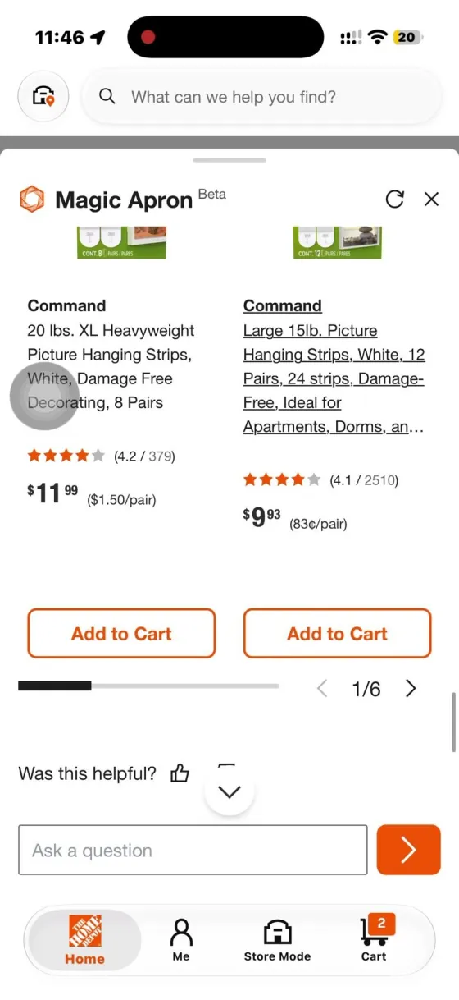
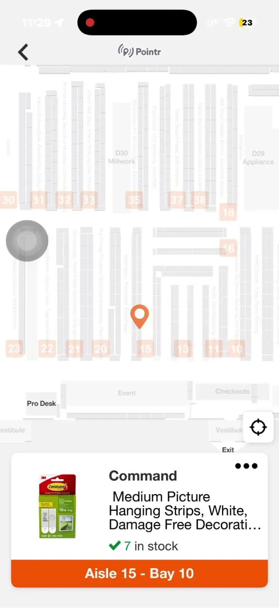

ConceptRetail app, AI assistant · 4 min read
Ask one question, get the right options
At home, I asked The Home Depot's AI assistant, Magic Apron, for something to hang a picture frame. It showed only online options. In Store Mode, the same question showed strips ready to pick up today. My fix: one or two quick follow-up questions, so both modes show the right options in the right order.
ConceptImpact is a hypothesis to test, not a result.
A concept I made while applying for a UX Designer role at The Home Depot. Not affiliated with or endorsed by The Home Depot. The before screens come from my own recordings of the public app.
Same question, two different answers
Magic Apron lives in the Home tab and in Store Mode. I asked both "What do I need to hang a 24×32 frame?", recorded each on my phone, ran a usability test with 1 participant, and compared the recordings frame by frame.
- From Home: only online options, and the strips were "not available for in-store pickup."
- In Store Mode: the same strips, in stock in Aisle 15, Bay 10. Same store, same day.
- Neither mode asks what the shopper needs, so Medium (10 lb) strips came first for a 10 to 20 lb frame.
- Stock counts first appear in the cart, and my participant wasn't sure which option they had picked.
- When the shelf is empty, Store Mode only lets you file a report. No shipping, no other store.
The problem: Magic Apron decides what to show based on the tab you opened, not on what you need.


Ask a little, then narrow the results
Each mode makes an assumption. Home assumes you're shopping online; Store Mode assumes you're in the aisle. Nobody asks the one thing that decides it: when do you need it?
How might we let one quick follow-up question, instead of the tab, decide which options come first, while always showing both pickup and shipping?
- I explored a bigger redesign first. Feedback: "This is too much change. Their designers will push back." So I patched only what was broken, on the real screens.
- At first I asked 3 questions everywhere. Too many. Round 2: 2 at home, 1 in the store.
- Then I prototyped 5 tasks in Figma, 3 of them next to the real "before" flow.
At home: 2 questions
- "When do you need it?" Today puts pickup first. No rush puts shipping first.
- One product question, like frame weight or bulb base.
- Pickup and shipping always show, as two labeled groups.
In the store: 1 question
- Skip "when." The shopper is already there.
- One product question, then the aisle and bay.
- Shelf empty? Offer a similar item, another store, or delivery.
Seven small changes, and the principle behind each
Each pair shows the real app today next to my redesign of the same screen. Everything else stays as The Home Depot built it.
Before: The app today 
After: My redesign Change 1 · HomeAt home, ask "When do you need it?"
Before, "I need it today" led to other products, and the strips were "not available for in-store pickup." Now Magic Apron asks one question first.
UX principles
- Match the real world. People think in "today or later," not "pickup or ship-to-home."
- User control and freedom. "Skip, show all options" is always there.
Before: The app today After: My redesign  Change 2 · Home
Change 2 · HomePickup and shipping, in the order you need
"I need it today" puts pickup at Centerville first, with shipping below. "No rush" flips the order. Both groups always show.
UX principles
- Consistency and standards. Home and Store Mode now give the same answer for the same store.
Before: The app today 
After: My redesign  Change 3 · Store
Change 3 · StoreIn the store, one question, then the aisle
Store Mode skips "when," since the shopper is already there, and asks one clear question with answers to tap.
UX principles
- Recognition over recall. The hint "usually 8 to 15 lb" means nobody has to guess.
- Hick's law. Four short options instead of open text.
Before: The app today 
After: My redesign  Change 4 · Results
Change 4 · ResultsRight size first, online only labeled
For a 10 to 20 lb frame, Large strips now come before Medium. The online value pack says Online Only and sits last.
UX principles
- Error prevention. It stops someone buying a 10 lb strip for a 15 lb frame.
Before: The app today 
After: My redesign  Change 5 · Cart
Change 5 · CartLow stock, said in words
The cart says "Only 2 left" (an example), so the shopper can switch to delivery before they drive.
UX principles
- Visibility of system status. A clear warning instead of a number to decode.
Before: The app today 
After: My redesign  Change 6 · Cart
Change 6 · CartA cart header that says what will happen
"Ship to Store" now comes with its arrival dates and "Free pickup." One line answers when, and how much.
UX principles
- Positive copy. It says what you get, not what you can't have.
Before: The app today 
After: My redesign  Change 7 · Store
Change 7 · StoreShelf empty? Offer the other options
A visible "Can't find it?" button replaces the hidden three-dot menu. Then "Still need it today?" offers a similar item, another store, or delivery, with an Undo.
UX principles
- Help users recover from errors. An empty shelf ends in three choices, not a dead end.
- Fitts's law. A labeled button beats a small three-dot target.
How I'd measure it
These are hypotheses, not results. I'd A/B test them on Magic Apron sessions and watch:
- Pickup orders started from the Home tab
- How often people answer or skip the question
- Add-to-cart rate, and time from question to cart
- "Can't find it" reports that still end in a purchase
A trade-off I named: Every question costs a tap, so the store asks only one, and each can be skipped. And when someone needs it today, the cheaper online pack drops to the bottom, so I'd watch average order value.
Why the business cares
- Store visits.Showing "ready today" at home turns browsers into store visits, where baskets grow.
- Saved sales.An empty shelf that offers shipping is a saved sale, not a lost one.
- Trust.One consistent answer builds trust in the AI, so people use it more.
- Cheap to test.Small patches on existing screens are cheap to build and easy to test.
Limits
One participant plus my own walkthroughs is a signal, not proof. And I don't know yet why the two modes disagree. It may be how each reads inventory.
Next
Test with 5 first-time DIYers, at home and in the store, and do an accessibility pass: tap targets, screen reader order and contrast.
Did you like this case study?
Tell me what worked, or what you'd change. It comes straight to me.